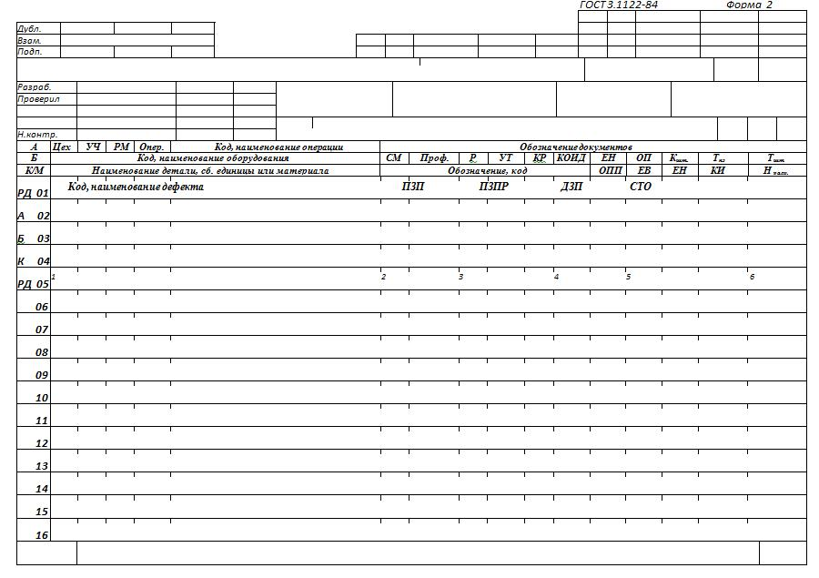
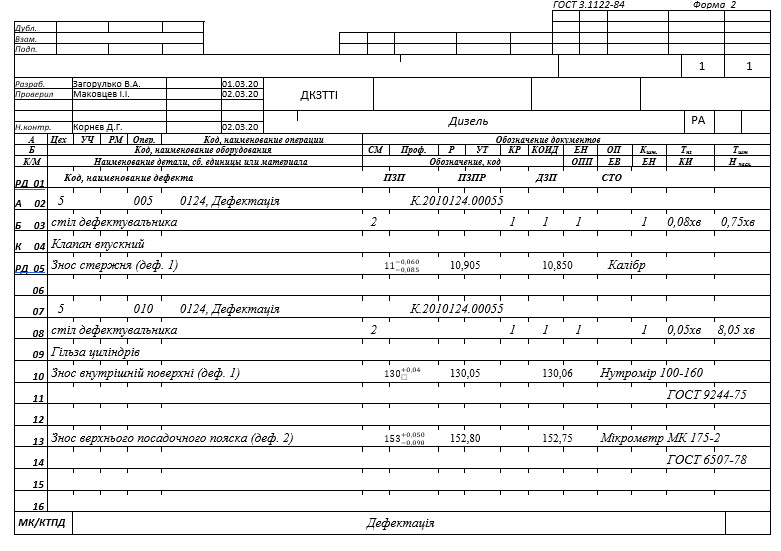
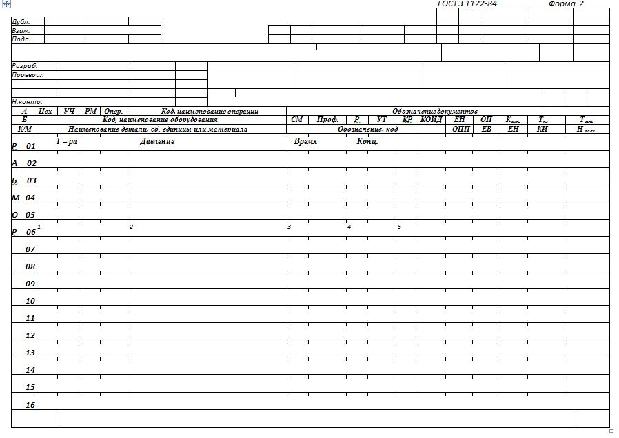
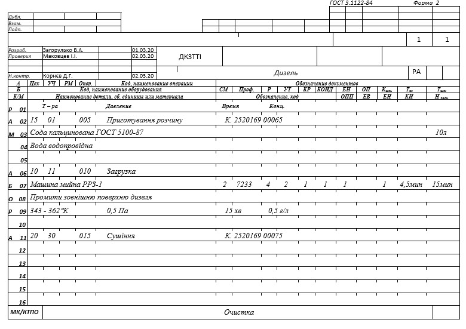
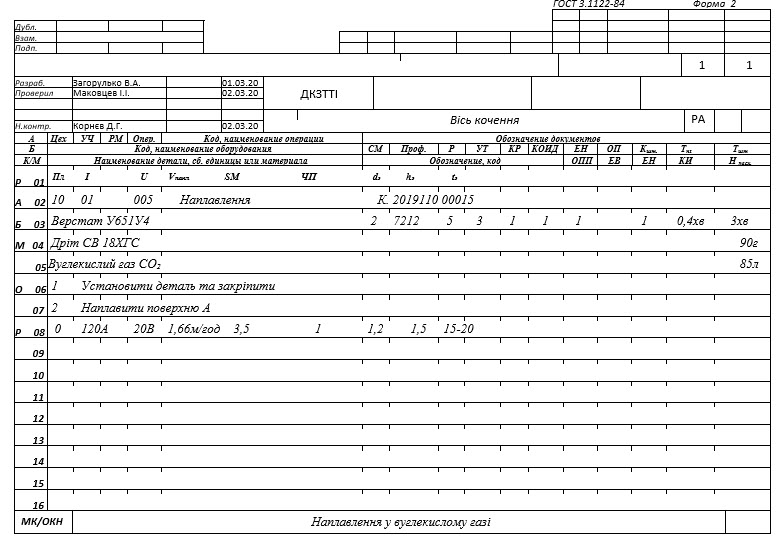
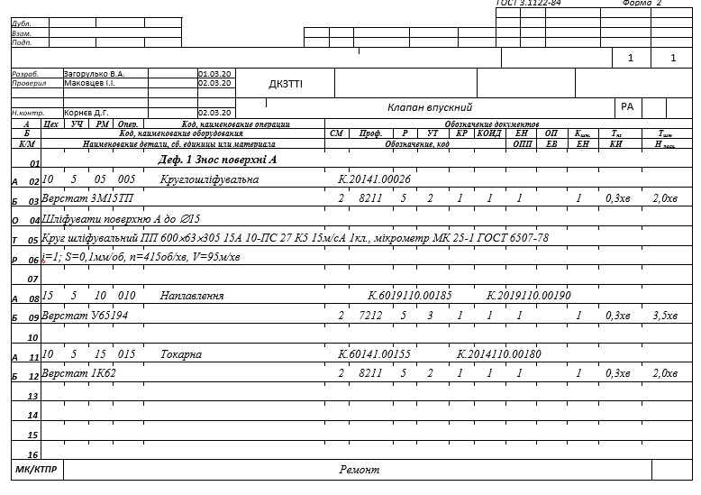

4.11 Правила оформлення документів на технологічні процеси ремонту (Р 50-60-88)
Документи
на ремонт виробів або складових частин повинні розроблятися на підставі
конструкторської документації й ремонтної документації.
Документи
розробляються на поточні й капітальний ремонти виробів і їхніх складових
частин.
Види
й призначення технологічних документів (далі - документів) наведені в таблиці
4.12.
Таблиця
4.12
|
Найменування
й умовне позначення виду документа |
Призначення
документа |
|
Карта
технологічного процесу ремонту (КТПР) |
КТПР
призначена для опису операцій технологічного процесу ремонту виробів
(складальних одиниць, деталей) у технологічній послідовності з вказівкою
переходів, технологічних режимів і даних про засоби технологічного
оснащення, матеріальних і трудових витрат |
|
Карта
технологічного процесу дефектації (КТПД) |
КТПД
призначена для опису операцій технологічного процесу дефектації виробу
(складальної одиниці, деталі) у технологічній послідовності із вказівкою
даних по контрольованих параметрах, по вимірювальному
інструменту |
|
Карта
типового (групового) технологічного процесу очищення (КТТПО,
КГТПО) |
КТТПО
(КГТПО) призначена для опису технологічного процесу очищення в
технологічній послідовності по всіх операціях із вказівкою загальних даних
по технологічних режимах, засобам технологічного оснащення, матеріальним і
трудовим витратам для всієї групи виробів |
|
Операційна
карта наплавлення (ОКН) |
ОКН
призначена для опису операцій наплавлення по переходах із вказівкою
технологічних режимів |
При
застосуванні форм МК, що виконують функції інших видів документів, їх варто
оформляти відповідно до вимог стандартів ЕСТД. При цьому в графі блоку основного
напису варто проставляти через дріб умовне позначення відповідного виду
документа, функцію якого виконує МК. Наприклад, МК/КТПР, МК/КТПД і т.д., а в
сусідній графі блоку - вид ремонту (ремонт, дефектація, очищення й
т.д.).
4.8.1
Форми й
правила оформлення карт технологічного процесу
дефектації
При
застосуванні форм МК у якості КТПД у графах «Найменування деталі, складальної
одиниці або матеріалу» і «Позначення, код» вказується найменування деталі
(складальної одиниці), що підлягає дефектації, і її позначення (у випадку
розробки КТПД на виріб або складальну одиницю).
При
описі технологічного процесу дефектації інформацію з дефектації варто записувати
у формах документів МК в окремому рядку зі службовим символом РД. Запис
інформації варто виконувати по всій довжині рядка з можливістю переносу її на
наступні рядки.

Рисунок
4.23 - Форма карти технологічного процесу дефектації, виконаної на МК
(заголовний лист)
При
застосуванні форм МК, у якості КТПД запис інформації в рядках зі службовими
символами А, Б и К варто виконувати відповідно до правил оформлення маршрутних
карт (ГОСТ 3.1118-82).
Графи
форм варто заповнювати відповідно до таблиці 4.13.
Таблиця
4.13
|
Номер графи |
Умовне
позначення графи |
Зміст
графи |
|
1 |
Код,
найменування дефекту |
Код,
найменування дефекту. Допускається не вказувати код
дефекту |
|
2 |
ПЗП |
Граничні
значення контрольованого параметра по конструкторському або
нормативно-технічному документу |
|
3 |
ПЗПР |
Граничні
значення контрольованого параметра по ремонтному конструкторському або
нормативно-технічному документу |
|
4 |
ДЗП |
Дійсне
значення контрольованого параметра |
|
5 |
СТО |
Позначення
(код), найменування застосовуваних засобів технологічного
оснащення |
|
6 |
- |
Резервна
графа. Заповнюється при необхідності на погляд
розроблювача |

Рисунок
4.24 - Приклад оформлення карти технологічного процесу
дефектації
4.8.2
Форми й правила оформлення карт
технологічного процесу очищення
При
застосуванні форм МК у якості КТТПО:
-
у
графі «Найменування деталі, складальної одиниці або матеріалу» наводяться дані
на матеріали й хімікати, застосовувані при очищенні;
-
у
графі «Норма витрати» варто вказувати кількість хімікатів і матеріалів,
необхідних для готування розчину;
-
у
графі «КОИД» - кількість деталей у пристрої, агрегаті.
При
описі технологічного процесу очищення варто вказувати параметри технологічних
режимів очищення у формах документів МК в окремому рядку зі службовим символом
Р. Запис інформації варто виконувати по всій довжині рядка з можливістю переносу
її на наступні рядки.

Рисунок
4.25 - Форма карти технологічного процесу очищення, виконаної на МК (заголовний
лист)
При
застосуванні форм МК, у якості КТПО запис інформації в рядках з службовими
символами А, Б, М и О варто виконувати відповідно до правил оформлення
маршрутних карт (ГОСТ 3.1118-82).
Графи
форм варто заповнювати відповідно до таблиці 4.14.
Таблиця
4.14
|
Номер графи |
Умовне
позначення графи |
Зміст
графи |
|
1 |
Т-ра |
Температура
води, розчину, середовища, що очищає, сушіння
деталі |
|
2 |
Тиск |
Тиск
середовища, що очищає |
|
3 |
Час |
Час
витримки на певному режимі |
|
4 |
Конц. |
Концентрація
розчину, що очищає |
|
5 |
- |
Резервна
графа. Заповнюється при необхідності на погляд
розроблювача |

Рисунок
4.26 - Приклад оформлення карти технологічного процесу
очищення
4.8.3 Форми й правила оформлення операційних карт
наплавлення
При
застосуванні форм МК у якості ОКН:
-
у
графі «Найменування деталі, складальної одиниці або матеріалу» наводяться дані
на матеріали, застосовувані при наплавленні;
-
у
графі «Норма витрати» варто вказувати кількість
матеріалів.
При
описі технологічного процесу наплавлення варто вказувати параметри технологічних
режимів наплавлення у формах документів МК в окремому рядку з службовим символом
Р. Запис інформації варто виконувати по всій довжині рядка з можливістю переносу
її на наступні рядки.

Рисунок
4.27 - Форма операційної карти наплавлення, виконаної на МК (заголовний
лист)
При
застосуванні форм МК, у якості ОКН запис інформації в рядках з службовими
символами А, Б, М и О варто виконувати відповідно до правил оформлення
маршрутних карт (ГОСТ 3.1118-82).
Графи
форм варто заповнювати відповідно до таблиці 4.15.
Таблиця
4.15
|
Номер графи |
Умовне
позначення графи |
Зміст
графи |
|
1 |
Пл |
Позначення
полярності (П - пряма, ЗВ - зворотня) |
|
2 |
I |
Сила
зварювального струму |
|
3 |
U |
Напруга
дуги |
|
4 |
Vнапл. |
Швидкість
наплавлення |
|
5 |
Sм |
Подача
присадочного матеріалу |
|
6 |
ЧП |
Число
проходів |
|
7 |
dэ |
Діаметр
електрода |
|
8 |
hэ |
Виліт
електрода |
|
9 |
1э |
Зсув
електрода |
|
10 |
- |
Резервна
графа. Заповнюється при необхідності на погляд
розроблювача |

Рисунок
4.28 - Приклад оформлення карти наплавлення
4.8.4 Форми й правила оформлення карт технологічного
процесу ремонту
При
застосуванні форм МК у якості КТПР:
у
графі «Код, найменування операції» перед найменуванням операції вказується код,
найменування дефекту (при наявності декількох операцій інформація вказується
тільки перед першою операцією). Допускається вказувати або код, або найменування
дефекту.
При
застосуванні форм МК, у якості КТПР запис інформації в рядках з службовими
символами А, Б и О варто виконувати відповідно до правил оформлення маршрутних
карт (ГОСТ 3.1118-82).

Рисунок 4.29 - Приклад оформлення карти технологічного процесу ремонту